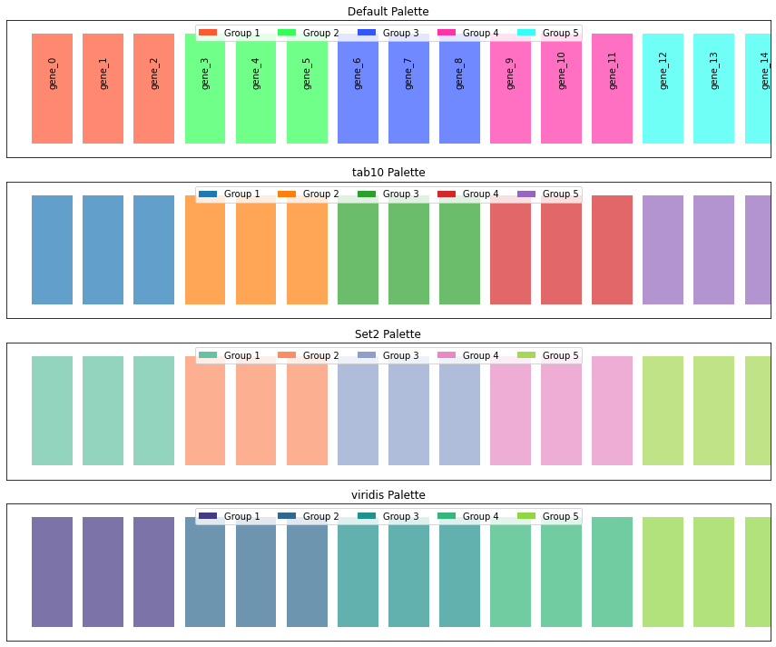
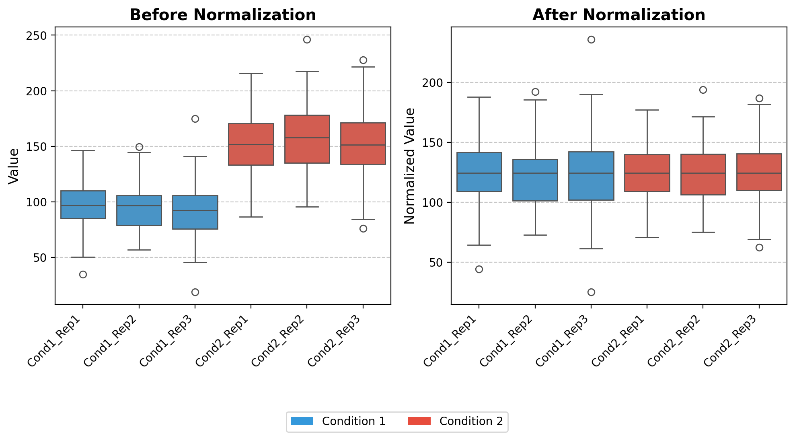
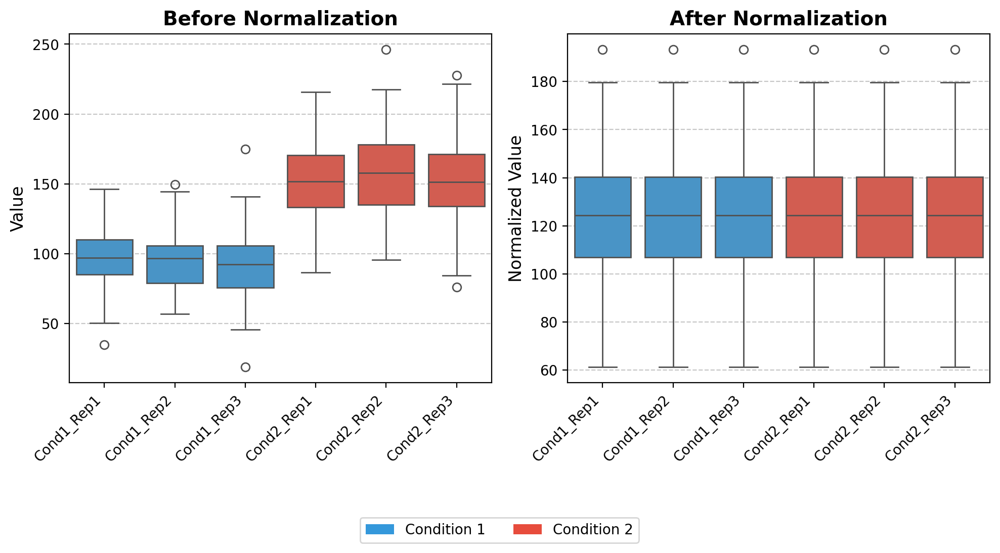
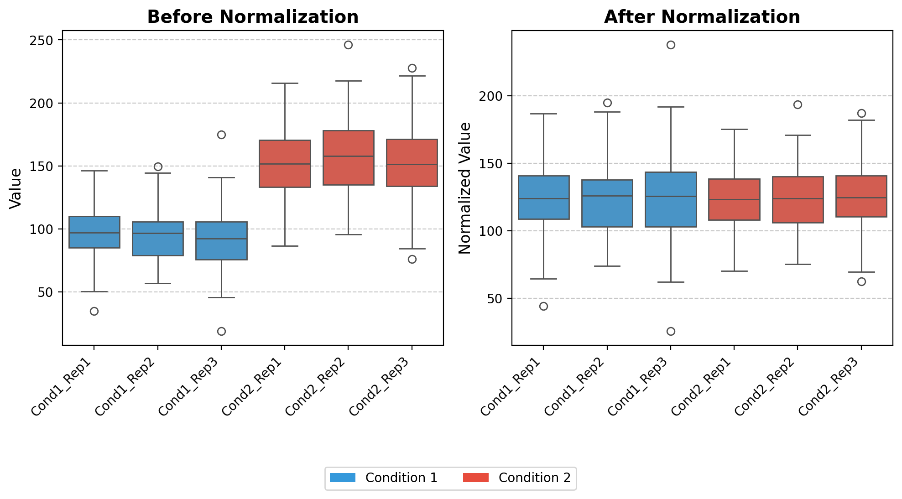
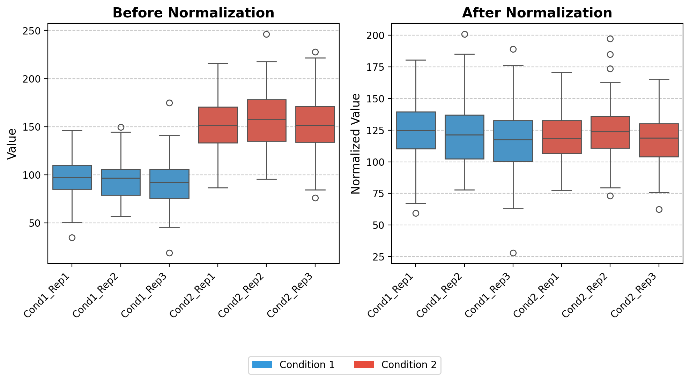
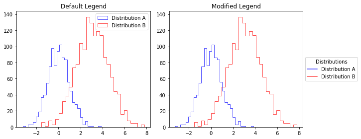
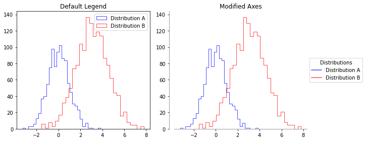
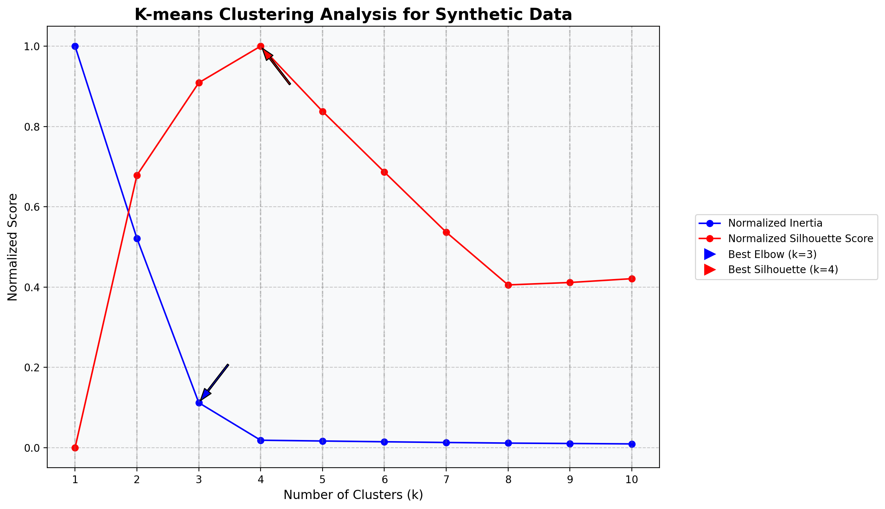
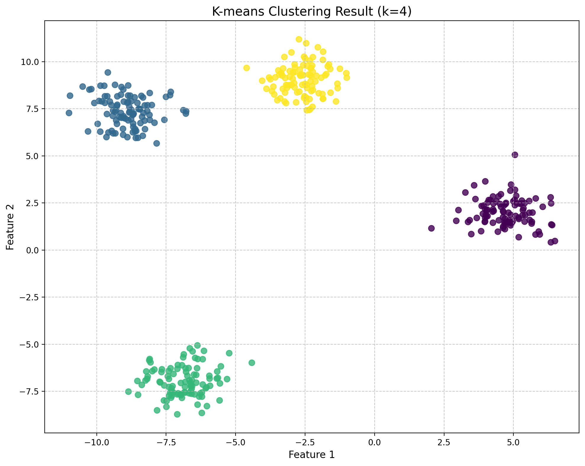

# Example usage with different palette options
def demonstrate_group_mapping_palettes():
# Create a list of items
items = [f'gene_{i}' for i in range(15)]
# Create a figure with multiple palette examples
fig, axes = plt.subplots(4, 1, figsize=(12, 10))
# Example 1: Default palette
color_map1, group_map1 = create_group_color_mapping(
items, group_size=3, return_color_to_group=True
)
# Example 2: tab10 palette
color_map2, group_map2 = create_group_color_mapping(
items, group_size=3, palette_name='tab10', return_color_to_group=True
)
# Example 3: Set2 palette
color_map3, group_map3 = create_group_color_mapping(
items, group_size=3, palette_name='Set2', return_color_to_group=True
)
# Example 4: viridis palette
color_map4, group_map4 = create_group_color_mapping(
items, group_size=3, palette_name='viridis', return_color_to_group=True
)
# Plot all examples
palettes = [
('Default Palette', color_map1, group_map1),
('tab10 Palette', color_map2, group_map2),
('Set2 Palette', color_map3, group_map3),
('viridis Palette', color_map4, group_map4)
]
for i, (title, color_map, group_map) in enumerate(palettes):
ax = axes[i]
# Plot bars
for j, item in enumerate(items):
ax.barh(0, 0.8, left=j, height=0.8, color=color_map[item], alpha=0.7)
if i == 0: # Only add labels on the first plot
ax.text(j+0.4, 0, item, rotation=90, ha='center', va='bottom')
# Add legend
legend_elements = [Patch(facecolor=color, label=group) for color, group in group_map.items()]
ax.legend(handles=legend_elements, loc='upper center', ncol=len(group_map))
ax.set_ylim(-0.5, 0.5)
ax.set_xlim(-0.5, len(items) - 0.5)
ax.set_yticks([])
ax.set_xticks([])
ax.set_title(title)
plt.tight_layout()
# Print example of hex colors from tab10
print("Example hex colors from tab10 palette:")
for color in list(group_map2.keys())[:5]:
print(color)
return fig, axesSemi Random Collection of functions
eventually to go into dedicated modules
convert_palette_to_hex
convert_palette_to_hex (palette_name, n_colors)
Convert a named color palette to hex color codes.
create_group_color_mapping
create_group_color_mapping (items, group_size=3, palette=None, palette_name=None, return_color_to_group=False)
Create a color mapping dictionary that assigns the same color to items in groups.
demonstrate_group_mapping_palettes()Example hex colors from tab10 palette:
#1f77b4
#ff7f0e
#2ca02c
#d62728
#9467bd(<Figure size 864x720 with 4 Axes>,
array([<Axes: title={'center': 'Default Palette'}>,
<Axes: title={'center': 'tab10 Palette'}>,
<Axes: title={'center': 'Set2 Palette'}>,
<Axes: title={'center': 'viridis Palette'}>], dtype=object))
norm_loading
norm_loading (df)
*Normalize datasets by equalizing the medians of all columns to a common target value.
This function implements a median normalization strategy that: 1. Calculates the median value for each column in the input dataframe 2. Computes a target value (the mean of all column medians) 3. Derives normalization factors to adjust each column to the target median 4. Applies these normalization factors to create a normalized dataset*
# Set random seed for reproducibility
np.random.seed(42)
# Generate synthetic data with controlled medians
# Creating a dataset with 100 features (rows) and 6 samples (columns)
# - 3 replicates for condition 1 (lower median)
# - 3 replicates for condition 2 (higher median)
# Number of features (e.g., proteins, genes)
n_features = 100
# Create condition 1 data (3 replicates with similar distribution)
condition1_rep1 = np.random.normal(loc=100, scale=25, size=n_features)
condition1_rep2 = np.random.normal(loc=95, scale=20, size=n_features)
condition1_rep3 = np.random.normal(loc=90, scale=22, size=n_features)
# Create condition 2 data (3 replicates with higher median)
condition2_rep1 = np.random.normal(loc=150, scale=30, size=n_features)
condition2_rep2 = np.random.normal(loc=160, scale=28, size=n_features)
condition2_rep3 = np.random.normal(loc=155, scale=32, size=n_features)
# Create a DataFrame
data = pd.DataFrame({
'Cond1_Rep1': condition1_rep1,
'Cond1_Rep2': condition1_rep2,
'Cond1_Rep3': condition1_rep3,
'Cond2_Rep1': condition2_rep1,
'Cond2_Rep2': condition2_rep2,
'Cond2_Rep3': condition2_rep3
})
# Apply the normalization function
data_normalized = norm_loading(data)
# Set up the figure for visualization
fig, (ax1, ax2) = plt.subplots(1, 2, figsize=(10, 6))
# Color mapping for conditions
colors = ['#3498db', '#e74c3c'] # Blue for Condition 1, Red for Condition 2
condition_colors = {
'Cond1_Rep1': colors[0], 'Cond1_Rep2': colors[0], 'Cond1_Rep3': colors[0],
'Cond2_Rep1': colors[1], 'Cond2_Rep2': colors[1], 'Cond2_Rep3': colors[1]
}
# 1. Boxplot for raw data (before normalization)
ax1.set_title('Before Normalization', fontsize=14, fontweight='bold')
sns.boxplot(data=data, ax=ax1, palette=condition_colors)
# Get current tick positions
ax1_ticks = ax1.get_xticks()
ax1_labels = [label.get_text() for label in ax1.get_xticklabels()]
# Set ticks and then ticklabels
ax1.set_xticks(ax1_ticks)
ax1.set_xticklabels(ax1_labels, rotation=45, ha='right')
ax1.set_ylabel('Value', fontsize=12)
ax1.grid(axis='y', linestyle='--', alpha=0.7)
# 2. Boxplot for normalized data
ax2.set_title('After Normalization', fontsize=14, fontweight='bold')
sns.boxplot(data=data_normalized, ax=ax2, palette=condition_colors)
# Get current tick positions
ax2_ticks = ax2.get_xticks()
ax2_labels = [label.get_text() for label in ax2.get_xticklabels()]
# Set ticks and then ticklabels
ax2.set_xticks(ax2_ticks)
ax2.set_xticklabels(ax2_labels, rotation=45,ha='right')
ax2.set_ylabel('Normalized Value', fontsize=12)
ax2.grid(axis='y', linestyle='--', alpha=0.7)
# Create a custom legend for conditions
from matplotlib.patches import Patch
legend_elements = [
Patch(facecolor=colors[0], label='Condition 1'),
Patch(facecolor=colors[1], label='Condition 2')
]
fig.legend(handles=legend_elements, loc='upper center', bbox_to_anchor=(0.5, 0.05), ncol=2)
# Adjust layout to make room for annotations
plt.tight_layout(rect=[0, 0.1, 1, 0.9])
plt.show()medians [ 96.82609271 96.6821434 92.14930633 151.50472099 157.87481208
151.45188746]
target 124.41482716043556
norm_facs [1.28493078 1.28684391 1.35014394 0.82119439 0.78806002 0.82148086]
quantileNormalize
quantileNormalize (df_input, keep_na=True)
*Perform quantile normalization on a pandas DataFrame.
Quantile normalization is a technique that makes the distribution of values for each column identical by transforming the values to match the distribution of the mean of quantiles across all columns.
Algorithm: 1. Sort values in each column independently 2. Calculate the mean across rows of the sorted data (creating a reference distribution) 3. For each original value, assign the corresponding value from the reference distribution based on its rank in its original column*
# Set random seed for reproducibility
np.random.seed(42)
# Generate synthetic data with controlled medians
# Creating a dataset with 100 features (rows) and 6 samples (columns)
# - 3 replicates for condition 1 (lower median)
# - 3 replicates for condition 2 (higher median)
# Number of features (e.g., proteins, genes)
n_features = 100
# Create condition 1 data (3 replicates with similar distribution)
condition1_rep1 = np.random.normal(loc=100, scale=25, size=n_features)
condition1_rep2 = np.random.normal(loc=95, scale=20, size=n_features)
condition1_rep3 = np.random.normal(loc=90, scale=22, size=n_features)
# Create condition 2 data (3 replicates with higher median)
condition2_rep1 = np.random.normal(loc=150, scale=30, size=n_features)
condition2_rep2 = np.random.normal(loc=160, scale=28, size=n_features)
condition2_rep3 = np.random.normal(loc=155, scale=32, size=n_features)
# Create a DataFrame
data = pd.DataFrame({
'Cond1_Rep1': condition1_rep1,
'Cond1_Rep2': condition1_rep2,
'Cond1_Rep3': condition1_rep3,
'Cond2_Rep1': condition2_rep1,
'Cond2_Rep2': condition2_rep2,
'Cond2_Rep3': condition2_rep3
})
# Apply the normalization function
data_normalized = quantileNormalize(data)
# Set up the figure for visualization
fig, (ax1, ax2) = plt.subplots(1, 2, figsize=(10, 6))
# Color mapping for conditions
colors = ['#3498db', '#e74c3c'] # Blue for Condition 1, Red for Condition 2
condition_colors = {
'Cond1_Rep1': colors[0], 'Cond1_Rep2': colors[0], 'Cond1_Rep3': colors[0],
'Cond2_Rep1': colors[1], 'Cond2_Rep2': colors[1], 'Cond2_Rep3': colors[1]
}
# 1. Boxplot for raw data (before normalization)
ax1.set_title('Before Normalization', fontsize=14, fontweight='bold')
sns.boxplot(data=data, ax=ax1, palette=condition_colors)
# Get current tick positions
ax1_ticks = ax1.get_xticks()
ax1_labels = [label.get_text() for label in ax1.get_xticklabels()]
# Set ticks and then ticklabels
ax1.set_xticks(ax1_ticks)
ax1.set_xticklabels(ax1_labels, rotation=45, ha='right')
ax1.set_ylabel('Value', fontsize=12)
ax1.grid(axis='y', linestyle='--', alpha=0.7)
# 2. Boxplot for normalized data
ax2.set_title('After Normalization', fontsize=14, fontweight='bold')
sns.boxplot(data=data_normalized, ax=ax2, palette=condition_colors)
# Get current tick positions
ax2_ticks = ax2.get_xticks()
ax2_labels = [label.get_text() for label in ax2.get_xticklabels()]
# Set ticks and then ticklabels
ax2.set_xticks(ax2_ticks)
ax2.set_xticklabels(ax2_labels, rotation=45,ha='right')
ax2.set_ylabel('Normalized Value', fontsize=12)
ax2.grid(axis='y', linestyle='--', alpha=0.7)
# Create a custom legend for conditions
from matplotlib.patches import Patch
legend_elements = [
Patch(facecolor=colors[0], label='Condition 1'),
Patch(facecolor=colors[1], label='Condition 2')
]
fig.legend(handles=legend_elements, loc='upper center', bbox_to_anchor=(0.5, 0.05), ncol=2)
# Adjust layout to make room for annotations
plt.tight_layout(rect=[0, 0.1, 1, 0.9])
plt.show()
norm_loading_TMT
norm_loading_TMT (df)
*Normalize TMT (Tandem Mass Tag) proteomics data to account for uneven sample loading.
This function performs total sum normalization, specifically designed for TMT-based multiplexed proteomics experiments where differences in total protein abundance between samples may be due to technical variations rather than biological differences.*
# Set random seed for reproducibility
np.random.seed(42)
# Generate synthetic data with controlled medians
# Creating a dataset with 100 features (rows) and 6 samples (columns)
# - 3 replicates for condition 1 (lower median)
# - 3 replicates for condition 2 (higher median)
# Number of features (e.g., proteins, genes)
n_features = 100
# Create condition 1 data (3 replicates with similar distribution)
condition1_rep1 = np.random.normal(loc=100, scale=25, size=n_features)
condition1_rep2 = np.random.normal(loc=95, scale=20, size=n_features)
condition1_rep3 = np.random.normal(loc=90, scale=22, size=n_features)
# Create condition 2 data (3 replicates with higher median)
condition2_rep1 = np.random.normal(loc=150, scale=30, size=n_features)
condition2_rep2 = np.random.normal(loc=160, scale=28, size=n_features)
condition2_rep3 = np.random.normal(loc=155, scale=32, size=n_features)
# Create a DataFrame
data = pd.DataFrame({
'Cond1_Rep1': condition1_rep1,
'Cond1_Rep2': condition1_rep2,
'Cond1_Rep3': condition1_rep3,
'Cond2_Rep1': condition2_rep1,
'Cond2_Rep2': condition2_rep2,
'Cond2_Rep3': condition2_rep3
})
# Apply the normalization function
data_normalized = norm_loading_TMT(data)
# Set up the figure for visualization
fig, (ax1, ax2) = plt.subplots(1, 2, figsize=(10, 6))
# Color mapping for conditions
colors = ['#3498db', '#e74c3c'] # Blue for Condition 1, Red for Condition 2
condition_colors = {
'Cond1_Rep1': colors[0], 'Cond1_Rep2': colors[0], 'Cond1_Rep3': colors[0],
'Cond2_Rep1': colors[1], 'Cond2_Rep2': colors[1], 'Cond2_Rep3': colors[1]
}
# 1. Boxplot for raw data (before normalization)
ax1.set_title('Before Normalization', fontsize=14, fontweight='bold')
sns.boxplot(data=data, ax=ax1, palette=condition_colors)
# Get current tick positions
ax1_ticks = ax1.get_xticks()
ax1_labels = [label.get_text() for label in ax1.get_xticklabels()]
# Set ticks and then ticklabels
ax1.set_xticks(ax1_ticks)
ax1.set_xticklabels(ax1_labels, rotation=45, ha='right')
ax1.set_ylabel('Value', fontsize=12)
ax1.grid(axis='y', linestyle='--', alpha=0.7)
# 2. Boxplot for normalized data
ax2.set_title('After Normalization', fontsize=14, fontweight='bold')
sns.boxplot(data=data_normalized, ax=ax2, palette=condition_colors)
# Get current tick positions
ax2_ticks = ax2.get_xticks()
ax2_labels = [label.get_text() for label in ax2.get_xticklabels()]
# Set ticks and then ticklabels
ax2.set_xticks(ax2_ticks)
ax2.set_xticklabels(ax2_labels, rotation=45,ha='right')
ax2.set_ylabel('Normalized Value', fontsize=12)
ax2.grid(axis='y', linestyle='--', alpha=0.7)
# Create a custom legend for conditions
from matplotlib.patches import Patch
legend_elements = [
Patch(facecolor=colors[0], label='Condition 1'),
Patch(facecolor=colors[1], label='Condition 2')
]
fig.legend(handles=legend_elements, loc='upper center', bbox_to_anchor=(0.5, 0.05), ncol=2)
# Adjust layout to make room for annotations
plt.tight_layout(rect=[0, 0.1, 1, 0.9])
plt.show()
ires_norm
ires_norm (df, exps_columns)
*Implement Internal Reference Scaling (IRS) normalization for combining multiple TMT experiments.
This function normalizes and integrates data from multiple TMT experiments by: 1. Computing the sum of each protein’s intensity across all channels within each experiment 2. Calculating the geometric mean of these sums across experiments (reference value) 3. Deriving scaling factors to adjust each experiment to this reference 4. Applying an additional total sum normalization to the combined dataset*
# Set random seed for reproducibility
np.random.seed(42)
# Generate synthetic data with controlled medians
# Creating a dataset with 100 features (rows) and 6 samples (columns)
# - 3 replicates for condition 1 (lower median)
# - 3 replicates for condition 2 (higher median)
# Number of features (e.g., proteins, genes)
n_features = 100
# Create condition 1 data (3 replicates with similar distribution)
condition1_rep1 = np.random.normal(loc=100, scale=25, size=n_features)
condition1_rep2 = np.random.normal(loc=95, scale=20, size=n_features)
condition1_rep3 = np.random.normal(loc=90, scale=22, size=n_features)
# Create condition 2 data (3 replicates with higher median)
condition2_rep1 = np.random.normal(loc=150, scale=30, size=n_features)
condition2_rep2 = np.random.normal(loc=160, scale=28, size=n_features)
condition2_rep3 = np.random.normal(loc=155, scale=32, size=n_features)
# Create a DataFrame
data = pd.DataFrame({
'Cond1_Rep1': condition1_rep1,
'Cond1_Rep2': condition1_rep2,
'Cond1_Rep3': condition1_rep3,
'Cond2_Rep1': condition2_rep1,
'Cond2_Rep2': condition2_rep2,
'Cond2_Rep3': condition2_rep3
})
# Apply the normalization function
data_normalized = ires_norm(data,[['Cond1_Rep1','Cond1_Rep2','Cond1_Rep3' ],['Cond2_Rep1','Cond2_Rep2','Cond2_Rep3' ]])
# Set up the figure for visualization
fig, (ax1, ax2) = plt.subplots(1, 2, figsize=(10, 6))
# Color mapping for conditions
colors = ['#3498db', '#e74c3c'] # Blue for Condition 1, Red for Condition 2
condition_colors = {
'Cond1_Rep1': colors[0], 'Cond1_Rep2': colors[0], 'Cond1_Rep3': colors[0],
'Cond2_Rep1': colors[1], 'Cond2_Rep2': colors[1], 'Cond2_Rep3': colors[1]
}
# 1. Boxplot for raw data (before normalization)
ax1.set_title('Before Normalization', fontsize=14, fontweight='bold')
sns.boxplot(data=data, ax=ax1, palette=condition_colors)
# Get current tick positions
ax1_ticks = ax1.get_xticks()
ax1_labels = [label.get_text() for label in ax1.get_xticklabels()]
# Set ticks and then ticklabels
ax1.set_xticks(ax1_ticks)
ax1.set_xticklabels(ax1_labels, rotation=45, ha='right')
ax1.set_ylabel('Value', fontsize=12)
ax1.grid(axis='y', linestyle='--', alpha=0.7)
# 2. Boxplot for normalized data
ax2.set_title('After Normalization', fontsize=14, fontweight='bold')
sns.boxplot(data=data_normalized, ax=ax2, palette=condition_colors)
# Get current tick positions
ax2_ticks = ax2.get_xticks()
ax2_labels = [label.get_text() for label in ax2.get_xticklabels()]
# Set ticks and then ticklabels
ax2.set_xticks(ax2_ticks)
ax2.set_xticklabels(ax2_labels, rotation=45,ha='right')
ax2.set_ylabel('Normalized Value', fontsize=12)
ax2.grid(axis='y', linestyle='--', alpha=0.7)
# Create a custom legend for conditions
from matplotlib.patches import Patch
legend_elements = [
Patch(facecolor=colors[0], label='Condition 1'),
Patch(facecolor=colors[1], label='Condition 2')
]
fig.legend(handles=legend_elements, loc='upper center', bbox_to_anchor=(0.5, 0.05), ncol=2)
# Adjust layout to make room for annotations
plt.tight_layout(rect=[0, 0.1, 1, 0.9])
plt.show()
clean_id
clean_id (temp_id)
mod_hist_legend
mod_hist_legend (ax, title=False)
Creates a cleaner legend for histogram plots by using line elements instead of patches. when using step Motivation: - Default histogram legends show rectangle patches which can be visually distracting - This function creates a more elegant legend with simple lines matching histogram edge colors - Positions the legend outside the plot to avoid overlapping with data
# Create sample data for multiple distributions
np.random.seed(42) # For reproducibility
data_a = np.random.normal(0, 1, 1000)
data_b = np.random.normal(3, 1.5, 1500)
# Create a figure with 2 subplots side by side
fig, (ax1, ax2) = plt.subplots(1, 2, figsize=(10, 4))
# Left subplot: Default histogram legend
ax1.hist(data_a, bins=30, alpha=0.7, label='Distribution A', edgecolor='blue', histtype='step')
ax1.hist(data_b, bins=30, alpha=0.7, label='Distribution B', edgecolor='red', histtype='step')
ax1.set_title('Default Legend')
ax1.legend() # Default legend
# Right subplot: Modified histogram legend
ax2.hist(data_a, bins=30, alpha=0.7, label='Distribution A', edgecolor='blue', histtype='step')
ax2.hist(data_b, bins=30, alpha=0.7, label='Distribution B', edgecolor='red', histtype='step')
ax2.set_title('Modified Legend')
mod_hist_legend(ax2, title='Distributions') # Apply our function
# Adjust layout to give space for the right-side legend
plt.tight_layout()
fig.subplots_adjust(right=0.85)
# Display the figure
plt.show()
clean_axes
clean_axes (ax, offset=10)
Customizes a matplotlib axes by removing top and right spines, and creating a broken axis effect where x and y axes don’t touch.
# Create sample data for multiple distributions
np.random.seed(42) # For reproducibility
data_a = np.random.normal(0, 1, 1000)
data_b = np.random.normal(3, 1.5, 1500)
# Create a figure with 2 subplots side by side
fig, (ax1, ax2) = plt.subplots(1, 2, figsize=(10, 4))
# Left subplot: Default histogram legend
ax1.hist(data_a, bins=30, alpha=0.7, label='Distribution A', edgecolor='blue', histtype='step')
ax1.hist(data_b, bins=30, alpha=0.7, label='Distribution B', edgecolor='red', histtype='step')
ax1.set_title('Default Legend')
ax1.legend() # Default legend
# Right subplot: Modified histogram legend
ax2.hist(data_a, bins=30, alpha=0.7, label='Distribution A', edgecolor='blue', histtype='step')
ax2.hist(data_b, bins=30, alpha=0.7, label='Distribution B', edgecolor='red', histtype='step')
ax2.set_title('Modified Axes')
mod_hist_legend(ax2, title='Distributions') # Apply our function
clean_axes(ax2)
# Adjust layout to give space for the right-side legend
plt.tight_layout()
fig.subplots_adjust(right=0.85)
# Display the figure
plt.show()
add_desc
add_desc (data, prot_to_desc)
parse_fasta_file
parse_fasta_file (fasta_file)
create a dictionary of protein id to gene product using fasta file from tritrypDB
get_scaled_df
get_scaled_df (df)
elbow_point
elbow_point (values)
Find the elbow point in a curve using the maximum curvature method.
| Type | Details | |
|---|---|---|
| values | list | The y-values of the curve. |
| Returns | int | The index of the elbow point. |
kmeans_cluster_analysis
kmeans_cluster_analysis (df, cluster_sizes, random_state=42, features=None, figsize=(12, 6), standardize=False, fill_na=False)
Perform K-means clustering analysis on a pandas DataFrame and visualize the results with both normalized inertia and silhouette scores on the same plot.
| Type | Default | Details | |
|---|---|---|---|
| df | pandas.DataFrame | The input data to cluster. | |
| cluster_sizes | list | List of cluster sizes (k values) to evaluate. | |
| random_state | int | 42 | Random seed for reproducibility (default: 42). |
| features | NoneType | None | List of column names to use for clustering. If None, all columns are used. |
| figsize | tuple | (12, 6) | Figure size for the output plot (default: (12, 6)). |
| standardize | bool | False | Whether to standardize the features (default: False). |
| fill_na | bool | False | Whether to fill missing values with column means (default: False). |
| Returns | tuple | (figure, inertia_values, silhouette_values) - The matplotlib figure object, the list of inertia values, and the list of silhouette scores. |
import numpy as np
import pandas as pd
import matplotlib.pyplot as plt
from sklearn.datasets import make_blobs
# Create synthetic dataset with 4 natural clusters
X, y = make_blobs(
n_samples=400,
centers=4,
cluster_std=0.8,
random_state=42
)
# Convert to DataFrame
df = pd.DataFrame(X, columns=['feature1', 'feature2'])
# Print basic information about the dataset
print(f"Dataset shape: {df.shape}")
print(df.head())
# Define the range of cluster sizes to test
cluster_sizes = list(range(1, 11)) # Test k from 1 to 10
# Run the kmeans cluster analysis
fig, ax, inertia_values, silhouette_values = kmeans_cluster_analysis(
df=df,
cluster_sizes=cluster_sizes,
random_state=42,
standardize=True, # Standardize the features
figsize=(12, 7)
)
# Now you can further customize the plot using the ax object
ax.set_facecolor('#f8f9fa') # Light gray background
ax.set_title('K-means Clustering Analysis for Synthetic Data', fontsize=16, fontweight='bold')
# Display the generated plot
plt.show()
# Print the actual optimal number of clusters (which should be 4 in this case)
print("\nInertia values:")
for k, inertia in zip(cluster_sizes, inertia_values):
print(f"k={k}: {inertia:.2f}")
print("\nSilhouette scores:")
for k, silhouette in zip(cluster_sizes, silhouette_values):
if k > 1: # Silhouette score not defined for k=1
print(f"k={k}: {silhouette:.4f}")
# Create a scatter plot of the data with the optimal cluster assignment (k=4)
from sklearn.cluster import KMeans
from sklearn.preprocessing import StandardScaler
# Standardize the data
scaler = StandardScaler()
X_scaled = scaler.fit_transform(df)
# Fit KMeans with k=4
kmeans = KMeans(n_clusters=4, random_state=42, n_init=10)
labels = kmeans.fit_predict(X_scaled)
# Create a scatter plot with cluster assignments using fig, ax
fig, ax = plt.subplots(figsize=(10, 8))
scatter = ax.scatter(X[:, 0], X[:, 1], c=labels, cmap='viridis', s=50, alpha=0.8)
ax.set_title('K-means Clustering Result (k=4)', fontsize=15)
ax.set_xlabel('Feature 1', fontsize=12)
ax.set_ylabel('Feature 2', fontsize=12)
ax.grid(True, linestyle='--', alpha=0.7)
fig.tight_layout()
plt.show()
# Verify the implementation by comparing with manually calculated metrics
# For k=4, calculate inertia manually
manual_inertia = 0
for i, point in enumerate(X_scaled):
centroid = kmeans.cluster_centers_[labels[i]]
manual_inertia += np.sum((point - centroid) ** 2)
print(f"\nVerification for k=4:")
print(f"KMeans inertia: {kmeans.inertia_:.4f}")
print(f"Manually calculated inertia: {manual_inertia:.4f}")Dataset shape: (400, 2)
feature1 feature2
0 -9.862671 8.727358
1 -4.604994 9.671808
2 -9.034922 7.105344
3 5.419975 1.855524
4 5.096591 2.881622
Standardizing features.
Inertia values:
k=1: 800.00
k=2: 417.20
k=3: 89.69
k=4: 15.00
k=5: 13.43
k=6: 11.91
k=7: 10.48
k=8: 9.25
k=9: 8.48
k=10: 7.65
Silhouette scores:
k=2: 0.5702
k=3: 0.7638
k=4: 0.8403
k=5: 0.7040
k=6: 0.5770
k=7: 0.4511
k=8: 0.3408
k=9: 0.3458
k=10: 0.3538
Verification for k=4:
KMeans inertia: 14.9956
Manually calculated inertia: 14.9956
